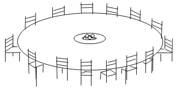

Б. Әмірованың танымдық іс-әрекеттегі этностық ерекшеліктерді білу деңгейін анықтауға арналған әлеуметтік психологиялық сұрақнамасы
Бұл сұрақнама танымдық іс-әрекеттегі этностық ерекшеліктерді білу деңгейін зерттеуге арналған әлеуметтік психологиялық әдістемесі қазақ халқының ұлттық құндылықтарын білу деңгейін анықтауға арналған. Сұрақнама алғашқы құрылуында бес халықтың құндылықтарын білуге арналып кандидаттық диссертацияда (1998) автормен қолданылды. Бұл нұсқасында тапсырмалардағы ұлттар қысқартылып, тек екі (орыс, қазақ) ұлттарының құндылықтарын білу деңгейі мақсат етілді.
Тапсырма: Сіздерге берілген сұрақтар ұғымдарын өз қалауларыңыз бойынша шеңберлеп көрсетесіздер. Қосымша беретін құндылықтар немесе пікірлер болса, жауаптың соңында көрсетуге болады.Белгілейтін жауаптар варианттары шектелмеген. Қатынасқандырыңызға рахмет.
Өңдеу матрица құрылып, компъютер есептеуімен қорытылды.
1. Мен осы ұлтын той жасау рәciмдерiн бiлемiн.
Б. орыс
2.Мен жақсы бiлетiн тiл.
А. қазақ
Б. орыс
3.Мен игерген тiл.
А. қазақ
Б. орыс
4.Мен бiлетiн халық әндер.
А. қазақ
Б. орыс
Мен ақын жазушыларды бiлемiн.
А. қазақ
Б. орыс
Мен бiлетiн суретшiлер, әншiлер және композиторлар.
А. қазақ
Б. орыс
Мен осы халыктардын киiмдерi қалай сүйретелетінің бiлемiн.
А. қазақ
Б. орыс
Ұлттык тағамдарды калай даярлайтының бiлемiн.
А. казақ
Б. орыс
Мен әйелдер мен еркектердiн аттарын бiлемiн.
А. қазақ
Б. орыс
Мен ұлттык тағамдарды ұнатамын.
А. қазақ
Б. орыс
11.Менiң ұлтымды мақтағанды үнатамын.
А. қазақ
Б. орыс
12..Мен осы ұлттын өкiлiмiн.
А. қазақ
Б. орыс
13.Менiң жынысым.
А. әйел
Б. еркек
14.Менiң жасым.
2.Сауалнама «Қазақ халқының салттары мен дәстүрлері»
Әдет, әдеп, салт, дәстүр ұғымдарының мәнін айтыңыз.
Салт пен дәстүрдің, әдет пен ғұрыптың, айырмашылығын қалай түсінесің?
Әдет-ғұрыптың өмірдегі қолданылмалы мәні туралы не білесің?
Ырым-тыйым туралы не білесің?
Бесік не үшін керек? Оның түрлерін ата.
Балаға ат қою дәстүрі туралы не білесің?
Діни рәсімдерге нелер жатады?
Діни мейрамдарды ата.
Маусымдық халықтық мейрамдар туралы не білесің? Оларды ата.
Бала тәрбиелеу дәстүрлерін ата.
Тілашар дәстүрі туралы не білесің?
Адамның жасына байланысты қандай атауларды білесің?
Өмірден өту салты мен дәстүрлерін атап шық.
Қыз баланы тәрбиелеу дәстүрлерін ата.
.Бағалау деңгейі:
(14 тапсырма болғанда)
Дұрыс жауабы 13-14 болса – 10балл (жоғары); дұрыс жауабы 10-11болса – 6балл (орташа); дұрыс жауабы 9-дан аз болса – 4балл (төмен).
3.Сауалнама «Туысқандық қарым-қатынас дәстүрі»
Бауырмалдық, туысқандық жайында не білесің?
Ата, әже, аға, апа ұғымдарының мәнін түсіндір
Ата-анаңа, бауырларыңа деген сүйіспеншілігіңді қалай білдіресің?
Атаңа, әжеңе, басқа да кәрия адамдарға қалай көмектесесің?
Ауылға барасың ба? Ауылда қандай туыстарың бар?
Көршілерің кімдер? Оларға деген ізеттілік, сыйластық қатынасты қалай түсінесің?
Халқымыздың туысқандық, көршілік дәстүрлері туралы не білесің?
Досың кім? Сен оның бауырларын, туыстарын білесің бе?
Елін, жерін, халқын сүйетін адамдар туралы не білесің?
Сенің отбасыңда қандай әдет-ғұрыптар жүзеге асады?
4. Б. Әмірованың «Ата мұра» туысқанаралық катнас әдістемесі
Әдістеме визуалдық-вербальдық түрде балалардың кескіндері бар суреттемелерден және мәтіндік тапсырмалардан тұрады. Әдістеме баланың ересек адамдармен арасындағы қатынас, әртүрлі өмірлік жағдайларда жүріс-тұрыс ерекшеліктерін анықтауға бағытталады.
Әдістемемен жұмыс істеу алдында мектеп жасына дейінгі балаларға мынадай нұсқау беріледі: «Сізден суреттер бойынша жауаптар талап етіледі.
«Ата мұра» (ТҚаТ) әдістемесі негізінде жүргізіліп, негізгі мақсат - қазақ отбасындағы адамдардың әлеуметтік рөлін және баланың әлеуметтік бейімділігі мен қоршаған ортадағы адамдармен өзара қатынасындағы ұлттық сана-сезімнің қалыптасу денгейін анықтау. Әдістемеде 12 көрсеткіш арқылы туысқанаралық қатынастағы адамдардың әлеуметтік рөлін анықтауға арналған, біз өз зерттеуімізге 5 көрсеткішін үйлестіріп алдық. Олар: анасына деген қатынасы, әкесіне деген қатынасы, анасы мен әкесіне деген қатынасы, әпкелері мен ағаларына деген қатынасы, атасы мен әжесіне деген қатынасы.
Әдістемемен жұмыс істеу алдында балаларға мынадай нұсқау беріледі: сізден суреттер бойынша жауаптар талап етіледі. Мәтіндік тапсырмалардың жауабын алдыңыздағы бланкіге жазасыз.Әдістеме балаларға тасырмалар іріктелген түрде беріледі. Отбасы мүшелерімен қарым-қатынасыңыз қалай болды, қандай достарыңыз болды. Енді осының негізінде суреттер бойынша жауап беріңіз. Әрбір балаға аты-жөнін, жасын, жынысын, сыныбын көрсететін, алдын-ала дайындалған бланктер беріледі.
Отбасында алты адам бар. Оларды өзіңше белгіле. Дастархан басындағы қарындасыңның орнын көрсет.

Дастархан басындағы анамен әкенің орнын белгіле.
ҚОСЫМША Д- жалғасы
Дастархан басындағы атаң мен әжеңнің орнын белгіле.
Отбасындағы алты адамның ішіндегі өз орныңды белгіле.
ҚОСЫМША Д - жалғасы
Отбасы отырысындағы аға-әпкелеріңнің отыру тәртібін көрсет.
5.«Мақал-мәтелдер» әдістемесі
(псих.ғ.к., С.М. Петрованың кұрастыруы бойынша)
Жеке тұлғаның өсуі мен тәрбиенің соңғы мақсатын бағалау үшін бұл әдістеменің маңызы зор. Себебі бұл оқушылардың адамгершілігінің даму деңгейі мен құндылық бағдарын көрсетеді.
Мақсаты: Оқушылардың адамгершілік тәрбиесінің деңгейін анықтап, олардың өзіне, өзге адамдарға және өмірге қарым-қатынастарының ерекшеліктерін айқындау.
Жүргізу барысы: Оқушыларға 60 мақал-мәтел жазылған үлестірме кағаздар таратылып беріледі. Ол 2 нұсқада болуы мүмкін. Бірінші жағдайда әр мақал-мәтелді зейін қойып оқып шығып, оның мазмұнымен келісу дәрежесіне сәйкес төмендегі шкала бойынша бағалау керек:
ұпай-елеусіз дәрежеде келісемін;
ұпай-жартылай келісемін;
ұпай-жалпы алғанда келісемін;
ұпай - түгелдей дерлік келісемін;
ұпай - сөзсіз келісемін.
Екінші жағдайда әр оқушы берілген мақалдарды түгел оқып, мазмұньмен келісетін мақалды таңдай білуі керек.
1 .а/ Кімнің ары таза болса, сол бакытты.
б/ Ұят- көз ашытатын түтін емес.
в/Күнәмен байығанша, кедей болып өмір сүрген артық.
г/ Ешнәрсе жемесең де, арың үшін күрес.
2.а/ Адам нанмен ғана өмір сүрмейді.
б/ Ақшасы көптің тұрмысы көл-көсір.
в/ Бақыт- ақшада емес.
г/ Ақшаны көргенде, жүрек тыңдамайды.
З.а/ Кімге бақыт қызмет етсе, сол ешнәрседен қорықпайды.
б/ Бақыт туған жерде, қызғаныш қатар туады.
в/ Кім жақсы өмір сүрсе, сол ұзақ жасайды.
г/Өмір сүру-өзеннен өту емес.
4. а/ Бақытсыздықтан қорқып, бақтан айырылма.
б/Адамдар бақыты, шыңыраудағы су тәрізді.
в/ Ақша - тірліктің жемісі.
г/ Жалаңаш туған - жалаңаш өледі.
5. а/Кім ешнәрсе істемесе, сол қателеспейді.
б/ Сақтансаң - құдай сақтар.
в/ Қүдайға сенім керек .
г/ Жағасын көрмей - суға түспе.
6.
а/ Әркім өз бақытына-ұста.
б/ Балықтай
мұзға ұрынған.
в/ Жартысын істеуге ғана құлқым бар...
г/ Қамалды баспен бұзбассың.
7.а/Жақсы атақ байлықтан күшті.
б/ Құлағың мандайыңнан биік өспес.
в/ Қалай өм ір сүресің , солай каласың.
г/ Басыңнан биікке секіре алмайсың.
8. а/Өмір қайырымды адамдарсыз емес.
б/Біздің ғасырымызда тентектер жеткілікті
в/Адам - байлық, ақша - ұрыс
г/Ақшадан араздық туады.
9. а/Елде бар нәрсе, бізді де қамтиды.
б/Адам тілеуімен өмір сүреді.
в/Халықтан бөліну- жеке өлу.
г/ Адамға-адам өктемдік етпеуі тиіс.
10.а /Әркім өзі үшін жауап береді.
б/Менің үйім -шетінде мен ешнәрсе білмеймін.
в/Өз көйлегің денеңе жақын.
г/Біздің жұмыс- шет қалу.
11.а/ Өзің құрысаң да, досынды құтқар.
б/ Адамдарға жақсылық істесең, өкініште қалмассың.
в/ Өмір жақсылық үшін берілген.
г/ Өзіңе жақсылық ойласаң, онда ешкімге жамандық жасама.
12.а/ 100сомың болғанша, 100 досың болсын.
б/ Дастархан басьнда бәрі таныс, қиын сәтте бәрі қалыс.
в/ Жақсы ағайын - байлықтан да артық.
г/ Қара күн туса -достың жаманы қашар.
13. а/Оқығанның күні- жарық, оқымағанның күні - ғаріп.
б/ Көп білсең тез қартаясың.
в/ Бар байлық -білімде.
г/ Ғасыр бойы үйренсең де, тентектігіңмен өлерсің.
14 а/ Еңбексіз -зейнет жоқ.
б/ Атқарылып болған жұмыстан тас қамал салынбас.
в/Аз ұйықтап, көп еңбек еткен бай болар.
г/Жұмыстан бай болмайсың, тезірек қарт боларсың.
15. а/Заңы орындалмаса, жазғаннан пайда не?
б/ Заң - өрмекшінің өрмегі тәрізді.
в/ Заң бар жерде дәлелденеді.
г/ Заң - таза ауа, қалай бұрылсаң, солай дем алар.
Алынған мәліметтерді сұрьптау.
Әдістеменің мәтінінің мазмұны өмір, адам жайлы мағынасы бір-біріне қарсы 30 жұп мақал-мәтел берілген. Тұлғаның өмірге, адамдарға және өз-өзіне деген қарьм-қатынасы мақалдар мен мәтелдер мазмұнында былай орналасқан;
1) а, б - өмірге деген рухани қатынасы;
в, г - өмірге деген рухани қатынасының болмауы;
а,в-материалдық жағдайдың төмендігі;
б, г -материалдық жағдайдың дұрыстығы;
а, в-бақытты, жақсыөмір;
б, г- өмірдің қиындығы мен күрделілігі;
4) а, б -өмірге сенімді көзқарас;
в, г - сенімсіз көзқарас;
5) а, в - шешімді көзкарас;
б, г - өмірге абайлап қарау;
а, в - өмірлік бағытының айқындылығы;
б, г - өмірлік бағытының айқындалмауы;
а, в - өмірде жетістікке жетуге тырысу;
б, г - өмірде жетістікке жетуге тырыспау;
а, в - адамдармен жақсы қарым-қатынас жасау;
б, г - адамдармен нашар қарым-қатынас жасау;
а, в - адамдармен ұжымдық қарым-қатынаста болуы;
б, г - адамдармен жеке қарым-қатынаста болуы;
10) а, в - адамдардың назарының ортасында болуды ұнатуы;
б, г - менмендік қатынаста болу;
11) а, в-өзгелердің игілігіне қызмет ету;
б, г - өз басын ғана ойлау;
12) а, в-достықтың маңызы;
6, г- достықтың маңызы жоқ;
13) а, в- білімнің маңызы;
б, г-білімнің маңызы жоқ;
14) а, в- еңбектің маңызы;
б, г - еңбектің маңызы жоқ;
а, в - заңдарды сақтаудың маңызы;
б, г- заңдарды сақтаудың маңызы жок;
"а" және "в" бойынша бөлек, "б", "г" бойынша бөлек ұпай саны (І нұсқа бойынша) немесе таңдағандары (2 нұсқа бойынша) саналады. Алынған нәтижені бағалаудың негізгі ұстанымы ұпай саны мен таңдағандарын салыстыру арқылы жүзеге асырылады.
"а" және "в" бойынша ұпай мен таңдауларының саны жоғары болса, онда өмірге, адамдарға, өзіне деген құнды қарым-қатынасты қалайтындығын білдірсе, "б"және "г" жауаптарының жоғарлығы өмірге, адамдарға, өзіне деген құнды қарым-қатынасты қаламайтындығын білдіреді.
Адамгершілік тәрбиесі төмендегі жағдаймен анықталады: "а" және "в" мәтелдерінің мазмұнымен келісушілік жоғары және "б", "г" мәтелдерімен келісушілік төмен болса, олардың адамгершілік қасиеттерінің жоғарылығын көрсетеді, ал, керісінше "а" және "в" мәтелдерімен келісушілік төмен, "б" және "г"-ға келісушілік жоғары болса, адамгершілік қасиетерінің төмендігін көрсетеді.
Ивановтың ұлттық сана-сезімді зерттеуге арналған проективті әдістемесі
Ивановтың проективті әдістемесі ұлттық сана- зерттеуге арналғын. Жобалау сурет сыналушының бейнелеу ойлауына бағытын сонымен қатар бейнелік эмоциональды қатнасты көрсетеді.
Негізгі әдістемелік құрал ретінде жобалау сурет пайдалынады. Зерттеуге арнайы құралдар: ақ қағаз, карандаш, өшіргіш. Тапсырма орындалмас бұрын келесі тапсырма беріледі. Өздеріңіздің ойларыңыз бойынша орыс пен қазақтың негізгі ерекшеліктері бейнелеп көрсетіңіз. Бейнелік немесе символикалық түрде бейнелейтіні айтылмайды. Әрбір парақта жасы, аты жөні жазылады. Алғашқы кезеңде сурет сала алмайтындығын білдіреді. Келесі қосымша түсініктен кейін « Сурет сапасына емес оның мазмұны қажет екенін айту керектігін айтқан соң жұмысқа кіріседі.